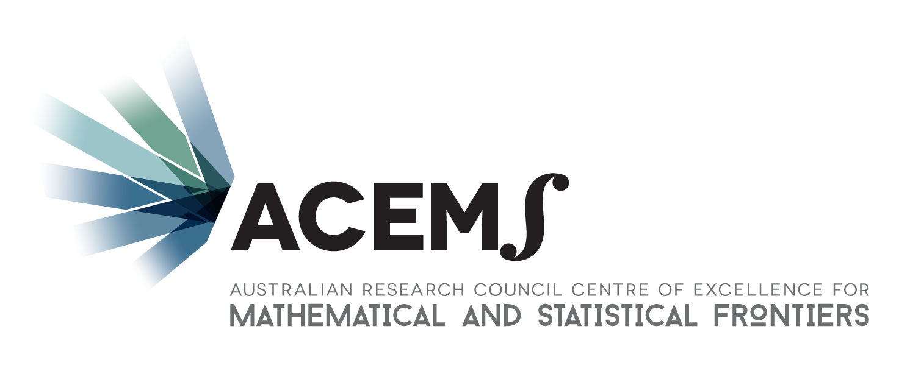

Sponsorship
Sponsorship packages are now available!
Sponsor YSC2017 and you will not only support your and early career-statisticians, but you’ll raise awareness of your company to this important audience. It is an opportunity to define and promote your brand and key messages, offering you a highly-targeted recruiting platform.
We would like to encourage you to explore the benefits of participating as a sponsor and securing your preferred options. While we have done our best to make all our packages outstanding value for you, we also offer the option of tailoring a package to your organisation’s requirements if our standard packages do not meet your needs.
Sponsorship packages available
Platinum – Major Sponsor - $5,000
Gold - $2,000
Silver - $1,000
Dinner - $3,000
Awards - $3,000
Hospitality - $2,000
Please see our extensive sponsorship prospectus for details. To discuss further options, please contact the Executive Officer of SSA (eo@statsoc.org.au).
Platinum sponsors
ACEMS

The Australian Research Council (ARC) Centre of Excellence for Mathematical and Statistical Frontiers (ACEMS) brings together for the first time a critical mass of Australia’s best researchers in applied mathematics, statistics, mathematical physics and machine learning, with partner researchers to engage in research programs that combine innovative methods for the analysis of data with theoretical, methodological and computational foundations provided by advanced mathematical and statistical modelling.
ACEMS intent is to create world-class research at the frontiers of the mathematical sciences dealing with probability and randomness, and to translate this research into new insights that benefit society. For more information about the Centre, see the ACEMS website.
Gold sponsors
Monash Business School

Monash Business School is a dynamic and progressive academy delivering the highest quality teaching, learning, scholarship and research. We are among the 1% of business schools in the world to have achieved the elite ‘triple crown’ of accreditation by the three major global business school accreditation bodies – AACSB, EQUIS and AMBA – and the only Group of Eight Australian university to have done so.
Monash Business School’s Department of Econometrics and Business Statistics is one of the few departments in the world that is dedicated to econometrics and business statistics. It is also the only department in Australia with dedicated honours and postgraduate programs in the area.
Our areas of research strength include econometric theory and methods, applied econometrics, statistics, time series analysis, forecasting, data visualisation and analytics. As a testament to the quality of our research, Monash was given the highest possible rank (“well above world standard”) in the discipline of econometrics in the 2012 and 2015 “Excellence in Research for Australia” assessments.
Data Analysis Australia

Data Analysis Australia is the largest commercial statistical and data science consultancy in Australia. Founded in 1988 by Dr John Henstridge, the company provides consultancy services to a wide range of industry and government clients, both nationally and internationally. Data Analysis Australia’s work has guided major planning and policy development, investigated solutions for business performance improvement, and assisted businesses to make crucial operating decisions. Over the years the company has developed an approach that sees it presenting complete solutions rather than just the technical components.
Some of Data Analysis Australia’s areas of expertise include:
- Applied statistical analysis and forecasting;
- Survey design, implementation and analysis;
- Analysis of large and complex databases;
- Risk and business analysis; and
- Analysis of geographical data, including GIS and Census data.
Data Analysis Australia maintains close links with the Statistical Society of Australia and is an avid supporter of the next generation of statisticians. To this end, the company supports professional initiatives and is especially proud to provide gold sponsorship for the 2017 Young Statistician’s Conference.
Minitab
Minitab 18 is the leading statistical software for quality improvement and statistics education worldwide. Our latest release is packed with new and improved statistics and other enhancements that give you more analytical power and greater insight into your processes. The expanded Assistant menu guides you through hypothesis tests, regression, DOE, measurement systems analysis, control charts, and capability analysis—and helps you interpret your results.
With its foundations in statistics education, Minitab is the package of choice for more than 4,000 colleges and universities around the world. It gives students the confidence to implement their statistical analysis knowledge later on in the workforce, and in some of the top companies in Australia, and internationally, including American Express, Crayola, Microsoft, Nike, and Toyota Motor.
For more information, visit our website.
Silver sponsors
Australian & New Zealand Journal of Statistics (Wiley)

Australian & New Zealand Journal of Statistics is the official journal of the Statistical Society of Australia, Inc. and the New Zealand Statistical Association, published by Wiley. Publish in the Australian & New Zealand Journal of Statistics and you’ll benefit from instant global reach, broad subject coverage and article types, and fast publication times. Wiley’s dedicated website can help you along your publishing journey, with useful hints, tips and resources to help improve your chances of acceptance.